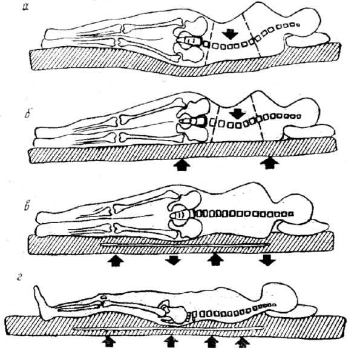
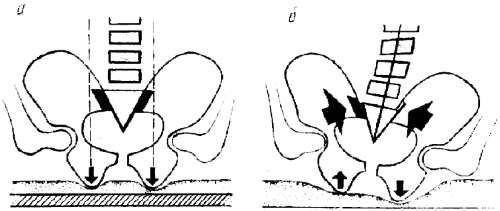
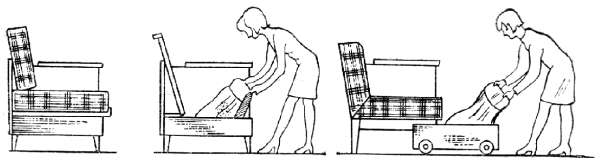
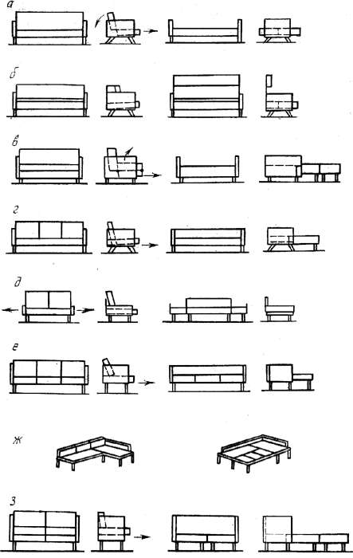
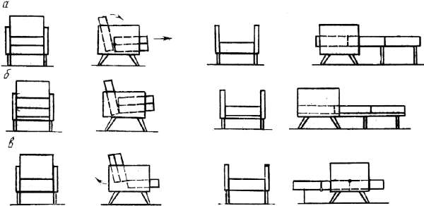

Конструктивные особенности мягкой мебели.

По назначению мягкую мебель подразделяют на изделия для сидения, сидения и лежания и только лежания.
Контакт человека с функциональными элементами мебели представляет собой взаимодействие мягких элементов мебели и частей тела человека. В результате в технической системе (мебели) происходят деформации мягких элементов, а у человека – изменения сосудистой, нервно-мышечной и опорно-двигательной систем организма. По этой причине к изделиям для сидения и лежания предъявляются соответствующие требования, одним из которых является показатель мягкости, т.е. способность мягких элементов мебели обеспечивать удобство за счет деформируемых настилочных материалов.
Мягкость мебельного изделия зависит от свойств материалов в функциональных элементах, она воспринимается телом человека как действующее на него давление. Степень мягкости влияет на мышечные напряжения и кровообращение, состояние человека во время сна. Все это определяет конструкцию изделий.
Для оценки мягкости мебели приняты общая деформация элемента под нагрузкой (Д, мм) и его податливость (П, мм/ даН), т. е, сопротивляемость мягкого элемента в начальный период его нагружения. Общая деформация и податливость определяются по формулам:
Д = Н – Н; П= (Н –Н)/10,
где Н – начальная высота элемента, мм; Н, Н, Н – высота элемента под нагрузкой соответственно 5, 15, и 70 даН, мм. (1 даН = 10 Ньютон = 1 кг)
Функциональные элементы мебели для сидения и лежания могут быть мягкими и жесткими. К жестким относят элементы без настила или с настилом толщиной до 10 мм.
Мягкость элементов классифицируют по категориям от 0 до IV.
Показатель мягкости позволяет определять функциональную рациональность конструкции, оценивать пригодность материалов для функциональных элементов, устанавливать их расход. Однако только одного показателя деформации элемента под давлением пуансона в виде жесткого диска для характеристики его мягкости недостаточно, так как при этом нельзя представить характер взаимодействия мягкого элемента и человека, распределение давления на поверхности его тела, т. е. нельзя судить о воздействии функциональных элементов на анатомо-физиологическую систему.
Оптимальная мягкость мебели должна быть такой, чтобы тело человека занимало правильное положение, а нагрузка равномерно распределялась на поверхность опоры. При этом конструкция должна позволить человеку легко менять позу.
Более удобными считаются функциональные элементы с точечной эластичностью, т. е. прогибающиеся лишь в месте давления выступающими частями тела человека.

Рис. 81. Положение тела человека на функциональных элементах различной мягкости: а – на чрезмерно мягких; б – на жестких; в, г – на эргономически правильно сконструированных
Тогда при пользовании изделиями для лежания позвоночник не искривляется, сохраняет естественное положение (на рис. позиции в, г). При чрезмерно мягком функциональном элементе происходит изгиб позвоночника, что содействует выдавливанию межпозвоночных дисков и ущемлению нервных окончаний (позиция а). Слишком твердый функциональный элемент (позиция б) обусловливает неестественно вытянутую позу человека и влечет за собой искривление позвоночника.
Во время эксплуатации твердые опоры для сидения по сравнению с мягкими обеспечивают лучшую возможность изменения положения тела человека и способствуют снижению утомляемости. Элементы повышенной мягкости без жесткой опоры для таза могут создавать условия для искривления позвоночника. Еще один минус: сидящему невозможно занять правильное устойчивое положение.

Рис. 82. Схема взаимодействия тела человека с сидениями различной мягкости: а – при эргономически правильном сидении; б – при эргономически неправилъном положении, вызывающем искривление позвоночника
Анализ процесса взаимодействия тела человека с мягкими функциональными элементами мебели показал, что это взаимодействие лучше определять по удельному давлению, воспринимаемому телом человека. Есть мнение, что характер взаимодействия тела человека с функциональным элементом более точно определяется эпюрой распределения давлений, а также глубиной внедрения тела в элемент. Эпюры распределения давлений показывают воздействие функционального элемента на состояние человека, а глубина внедрения характеризует мягкий элемент с точки зрения возможности изменения в нем положения тела. Оба показателя находятся между собой в функциональной зависимости и точно характеризуют взаимодействие тела человека и изделия. Эпюры распределения давлений используются как качественные характеристики конструкций мягких элементов также за рубежом, в частности при проектировании сидений в авиастроении.
Измеряют давление с помощью датчиков различных конструкций, индикаторов давлений, методом «отпечатков» на специально обработанной бумаге, размещаемой на поверхностях исследуемых изделий.
За оптимальные значения максимального давления, действующего на тело человека со стороны функционального элемента, и деформации последнего принимаются такие, которые вызывают у людей наименьшие изменения анатомо-физиологических систем. Эти изменения изучаются на основании физиологических исследований, которые проводятся одновременно с техническими. Для исследования анатомо-физиологическон системы человека применяются следующие методы:
– реовозография – регистрация электрического сопротивления в зависимости от кровенаполнения сосудов нижних конечностей в области голени;
– электромиография – регистрация биоэлектрической активности мышц (чем удобнее функциональный элемент, тем меньше амплитуда биопотенциала);
– актография – регистрация двигательной активности испытуемого (чем удобнее изделие, тем меньше коэффициент активности человека).
Короче говоря, для принятия оптимальных решений при разработке изделий новых конструкций из новых материалов или для уточнения функциональных показателей изделий нужна их анатомо-физиологичеcкая оценка.
Мебель для сидения и лежания представляет собой очень большую группу изделий, разнообразных по функциональному назначению и конструкции. Самыми массовыми изделиями являются табуреты и стулья. Табуреты изготавливают с жестким, гибким и мягким сидениями. Стулья подразделяются на столярные, гнутые, клееные из шпона, а также смешанных конструкций. Сидения стульев могут быть жесткими и мягкими.
Кресла для отдыха подразделяют на столярные, гнутые, гнуто-клееные и смешанных конструкций, с высокой и низкой спинкой, с подлокотниками и без них. В креслах из жестких и эластичных полимерных материалов сидение, спинка и подлокотники могут выполняться в едином блоке.
Диваны-кровати состоят из основания, сидений и спинок, боковин и трансформирующих устройств. В качестве оснований принимаются опорные коробки, скамейки и рамки с подсадными ножками. Мягкие элементы могут быть односторонней и двусторонней мягкости. Подлокотники делают щитовой или рамочной конструкции. Вертикальные бруски рамочных подлокотников одновременно могут быть и ножками. Подлокотники крепят так, чтобы их можно было снимать.
Требования к трансформирующим устройствам стандартны: они должны обеспечивать возможность трансформации изделия усилием одного человека.
Для хранения постельных принадлежностей служат специальные отделения, которые чаще всего находятся под сидением. Бывают конструкции, в которых отделения устраивают за спинкой или в виде специального ящика вместо одной из боковин и т.п.

Рис. 83. Расположение отделений для постельных принадлежностей в диванах
Схемы трансформации диванов-кроватей различны, они во многом определяют конструкции этих изделий. Они могут быть с трансформируемыми цельными сиденьями и спинками, цельными сиденьями и составными спинками, составными сиденьями и спинками.

Рис. 84. Схемы трансформации диванов-кроватей: а – сидение выдвигается вперед, спинка поворачивается назад; б – спинка поднимается вверх; в – двойное сидение выдвигается вперед, верхнее откидывается, а спинка поворачивается; г, е, ж – трансформирующее устройство выдвигается вперед из-под сиденья и на него укладываются подушки спинки; д – то же, но трансформирующее устройство выдвигается с боков; з – трансформирующее устройство выдвигается вперед, на него укладывают подушки сиденья, а в образовавшееся свободное место– подушки спинки
Диваны изготавливают двух– и трехместными. Они имеют основания или ножки, подлокотники, мягкие сидения и спинки, которые могут быть цельными или составными. Разновидностями диванов являются кушетки и тахты. Кушетки делаются без спинки и с одним подлокотником, выполняющим роль подголовника. Ширина кушеток 800 мм.
Тахта изделие с подлокотниками или без них, с подушками спинки, шириной не менее 900 мм. При необходимости устройства в диване отделения для постельных принадлежностей его располагают в основании или под ним в виде выдвижного ящика.
Кресла-кровати используют как кресла и как кровати. Для использования в качестве кровати их трансформируют по схемам, показанным на рисунке.

Рис. 85. Схемы трансформации кресел-кроватей: а – подушки двойного сидения вытягиваются вперед и раскладываются, спинка поворачивается; б – опорное устройство вытягивается вперед, свободно лежащие подушки двойного сидения и спинки укладываются на него; в – подушки двойной спинки откидываются назад и раскладываются
Стационарные кровати по конструкции могут быть с царгами и без царг, кровати с царгами могут быть с навесными и опорными спинками. В царговых кроватях с опорными спинками ножки и царги крепят к спинкам. Матрац укладывают на четыре опорных бруска, которые закрепляют к внутренним сторонам царг. Если спинки у кроватей навесные, ножки крепят к царгам.
Бесцарговые кровати могут быть с навесными спинками и матрацем, к которому крепят ножки, или состоять из рамки или коробки с различными видами оснований, прикрепляемых к ним ножек, съемных спинок и съемного мягкого элемента двусторонней мягкости.
Кровати могут изготавливаться складными, убирающимися, например в шкаф-стенку. Стационарные детские кровати часто делают двухъярусными.
Основания мебели для сидения и лежания бывают жесткие, гибкие и эластичные. К основаниям первого типа относятся рамки или коробки с заглушинами из фанеры клееной или ДВП, щиты и гнутовыклейные элементы. К основаниям второго типа относятся рамки и коробки с полотнищами и лентами из ткани, резинотканевыми лентами, подпружиненные элементы из плоскоклееных деталей. К основаниям третьего типа относятся рамки и коробки с сеткой из пружин различного типа и резиновых лент.
Мягкие элементы могут быть односторонними и двусторонними – в виде съемных подушек, укладываемых на жесткие, гибкие или эластичные основания.